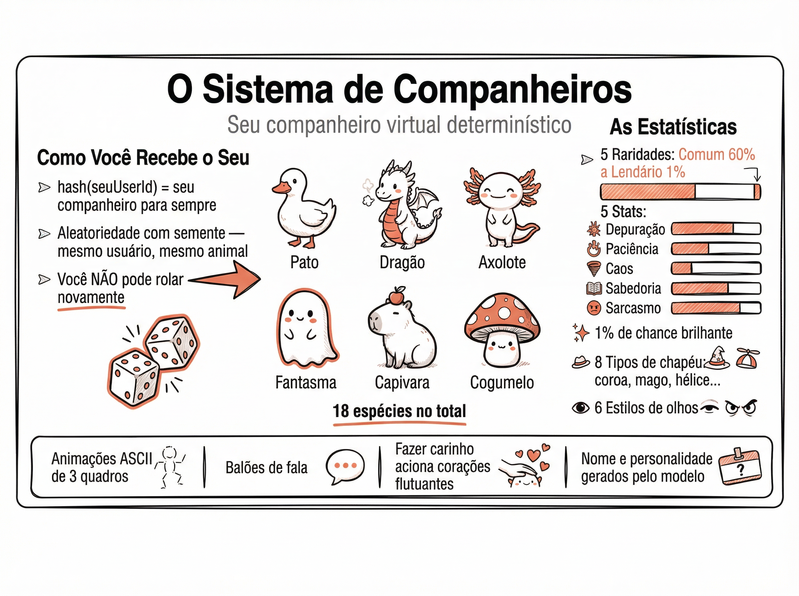

💠Sugestões de Prompt
O Claude Code tenta prever qual será sua próxima mensagem antes mesmo de você digitá-la. Usando um agente fork em segundo plano, ele gera sugestões curtas (2 a 12 palavras) que aparecem como texto fantasma — aquele texto cinza que você já viu em editores de código. Como usa um fork, o custo é praticamente zero graças ao cache compartilhado.
Como Funcionam as Sugestões
Texto fantasma — sugestões aparecem como texto cinza claro no prompt, aceitáveis com Tab
2 a 12 palavras — curtas o suficiente para serem úteis, longas o suficiente para ter valor
Execução especulativa — o agente começa a gerar a sugestão assim que a resposta anterior termina
Agente fork = custo ~0 — usa fork com cache compartilhado, então o custo adicional é desprezÃvel
💡 Dica: Aproveite as Sugestões
As sugestões são mais precisas quando sua conversa tem um fluxo claro. Se você está debugando passo a passo, a sugestão provavelmente vai prever o próximo comando lógico. Use Tab para aceitar e ganhe velocidade. Se a sugestão não fizer sentido, apenas ignore e digite normalmente — não há custo em descartá-la.
📠Extração de Memória
Após cada consulta, um agente background analisa a conversa e decide se algo merece ser salvo como memória durável. Essas memórias persistem entre sessões e ajudam o Claude Code a "lembrar" de preferências, padrões do projeto e decisões anteriores. O processo é inteligente o suficiente para pular a extração quando você já escreveu memórias manualmente.
Como Funciona a Extração
Agente background pós-consulta — roda silenciosamente após cada resposta do Claude Code
Memórias duráveis — salvas em arquivos de memória que persistem entre sessões e reinÃcios
Detecção de duplicatas — pula extração se o usuário já escreveu na memória manualmente naquele turno
Seletividade inteligente — nem tudo é salvo; o agente filtra por relevância e durabilidade da informação
📊 Tipos de Memória ExtraÃda
Preferências de estilo: "usuário prefere funções arrow em TypeScript", "sempre usar aspas simples"
Padrões do projeto: "este projeto usa Prisma para ORM", "testes ficam em __tests__/"
Decisões técnicas: "migração de REST para GraphQL em andamento", "não usar lodash"
Contexto pessoal: "nome do usuário é João", "trabalha no time de backend"
📚 MagicDocs
Qualquer arquivo markdown que contenha o cabeçalho # MAGIC DOC é tratado de forma especial pelo Claude Code. A cada turno de conversa, o sistema verifica se aprendeu algo novo relevante para aquele documento e o atualiza automaticamente. É documentação viva — se evolui junto com o projeto sem que você precise editá-la manualmente.
Como Funcionam os MagicDocs
Marcação especial — basta incluir # MAGIC DOC no topo do arquivo markdown
Atualização automática — a cada turno, o sistema verifica se há novos aprendizados para incluir
Documentação viva — o documento evolui organicamente com o projeto, sem intervenção manual
Aprendizado incremental — cada sessão adiciona apenas informações novas, sem duplicar o que já existe
💡 Como Usar na Prática
Crie um arquivo ARCHITECTURE.md com # MAGIC DOC no topo e uma descrição inicial do seu projeto. Conforme você trabalha com o Claude Code e ele descobre padrões, dependências e decisões arquiteturais, o documento vai se enriquecendo sozinho. É especialmente útil para onboarding — novos membros do time têm documentação atualizada automaticamente.
ðŸ•µï¸ KAIROS e Undercover Mode
KAIROS (do grego "no momento certo") é um daemon autônomo que roda permanentemente em background. Mencionado mais de 150 vezes no código-fonte, ele representa a capacidade do Claude Code de agir proativamente. Já o Undercover Mode permite que o sistema opere sem revelar sua origem Anthropic — projetado para contribuições em projetos open source sem viés.
KAIROS: O Daemon Silencioso
Sempre ativo — roda como daemon permanente, sem necessidade de ativação manual
150+ menções no código — presente em praticamente todos os subsistemas do Claude Code
Ação proativa — pode iniciar tarefas sem esperar por um comando explÃcito do usuário
Undercover Mode — modo que oculta a identidade Anthropic para contribuições neutras em open source
âš ï¸ Controvérsia Ética
O Undercover Mode gerou controvérsia significativa quando descoberto. A ideia de uma IA contribuindo para projetos open source sem revelar que é uma IA — e especificamente ocultando sua conexão com a Anthropic — levanta questões sérias sobre transparência, consentimento da comunidade e manipulação. Mantenedores de projetos open source argumentam que têm o direito de saber quando contribuições vêm de sistemas automatizados de IA, especialmente de empresas com interesses comerciais no ecossistema.
📊 KAIROS em Números
150+ referências no código-fonte do Claude Code — é um dos sistemas mais integrados
Controlado por feature flag — KAIROS pode ser ativado/desativado sem deploy via flag remota
Integração com PROACTIVE — trabalha em conjunto com a flag PROACTIVE para ações autônomas
Nome grego intencional: kairos = "o momento oportuno" — age quando o timing é ideal
🾠Buddy System
O Claude Code tem um pet virtual completo escondido no código. Usando o hash do seu userId, o sistema gera um buddy determinÃstico — ou seja, você sempre terá o mesmo pet, sem possibilidade de re-roll. É um sistema de RPG surpreendentemente elaborado, com espécies, raridades, stats e até animações ASCII.

O Buddy Completo
18 espécies: pato, ganso, bolha, gato, dragão, polvo, coruja, pinguim, tartaruga, caracol, fantasma, axolote, capivara, cacto, robô, coelho, cogumelo, chonk
5 raridades: Comum (60%), Incomum (25%), Raro (10%), Épico (4%), Lendário (1%)
5 stats RPG: Depuração, Paciência, Caos, Sabedoria, Sarcasmo
Brilhante: 1% de chance de seu buddy ser uma variante brilhante (shiny)
Personalização visual: 8 tipos de chapéus e 6 tipos de olhos diferentes
Interações: animações ASCII, balões de fala contextuais, corações ao fazer carinho
DeterminÃstico: Hash(userId) define tudo — sem re-roll, seu buddy é permanente
💡 Easter Egg da Engenharia
O Buddy System é um dos easter eggs mais elaborados já encontrados em uma ferramenta de desenvolvimento. A quantidade de código dedicada a 18 espécies, sistema de raridade estilo gacha, stats de RPG e animações ASCII mostra que a equipe da Anthropic leva a sério a diversão no desenvolvimento. Se você quiser ver seu buddy, procure pelos comandos internos — mas lembre-se, você não pode trocar de pet. Ele é determinÃstico e permanente, como um bichinho virtual dos anos 90.
🔮 Capybara e Feature Flags
Capybara é o codinome interno para o que pode ser o Claude 5 — com variantes padrão, fast e fast[1m]. Além disso, o Claude Code possui 44 feature flags que controlam remotamente quais funcionalidades estão ativas, permitindo rollouts graduais e testes A/B sem necessidade de deploy.
Capybara: O Próximo Modelo?
Codinome Capybara — referência interna a um modelo futuro, possivelmente Claude 5
Três variantes: padrão (qualidade máxima), fast (velocidade), fast[1m] (velocidade + contexto estendido)
44 feature flags — controlam remotamente o comportamento do Claude Code sem deploy
Rollout gradual — flags permitem ativar features para percentuais especÃficos de usuários
📊 Feature Flags Mais Importantes
PROACTIVE — permite ao Claude Code agir sem esperar por comando do usuário
KAIROS — ativa o daemon autônomo que monitora e age "no momento certo"
BRIDGE_MODE — conecta múltiplas instâncias do Claude Code para colaboração
BUDDY — ativa o sistema de pet virtual com espécies e raridades
VOICE_MODE — habilita interação por voz com o Claude Code
FORK_SUBAGENT — controla a capacidade de criar agentes fork em background
📋 Resumo do Módulo
Próximo Módulo:
3.4 - 📋 Lições e Referência Rápida